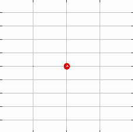
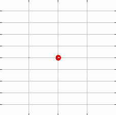

The Doppler Effect
I don't know how to explain this topic, so here's some helpful gifs I stole from Khan Academy.
 
As you can see, while it is moving forwards, the waves in front of it tend to "compress", leading to a perceived higher/lower frequency.